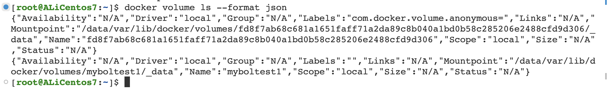
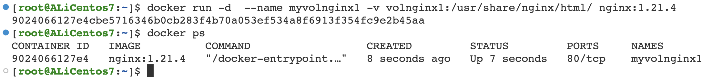
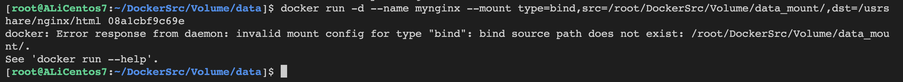

第七章-Docker存储卷
1. Docker Volume引入
参考：比特就业课
1.1 什么是存储卷？
存储卷就是将宿主机的本地文件系统中存在的某个目录直接与容器内部的文件系统上的某一目录建立绑定关系。这就意味着，当我们在容器中的这个目录下写入数据时，容器会将其内容直接写入到宿主机上与此容器建立了绑定关系的目录。在宿主机上的这个与容器形成绑定关系的目录被称作存储卷。卷的本质是文件或者目录，它可以绕过默认的联合文件系统，直接以文件或目录的形式存在于宿主机上。
宿主机的/data/web 目录与容器中的/container/data/web 目录绑定关系，然后容器中的进程向这个目录中写数据时，是直接写在宿主机的目录上的，绕过容器文件系统与宿主机的文件系统建立关联关系，使得可以在宿主机和容器内共享数据库内容，让容器直接访问宿主机中的内容，也可以宿主机向容器写入内容，容器和宿主机的数据读写是同步的。
1.2 为什么需要存储卷
1.2.1 数据丢失问题
容器按照业务类型，总体可以分为两类：
无状态的（数据不需要被持久化）
有状态的（数据需要被持久化）
显然，容器更擅长无状态应用。因为未持久化数据的容器根目录的生命周期与容器的生命周期一样，容器文件系统的本质是在镜像层上面创建的读写层，运行中的容器对任何文件的修改都存在于该读写层，当容器被删除时，容器中的读写层也会随之消失。虽然容器希望所有的业务都尽量保持无状态，这样容器就可以开箱即用，并且可以任意调度，但实际业务总是有各种需要数据持久化的场景，比如 MySQL、Kafka 等有状态的业务。因此为了解决有状态业务的需求，Docker 提出了卷（Volume）的概念。
1.2.2 性能问题
UnionFS 对于修改删除等，一般效率非常低，如果对一于 I/O 要求比较高的应用，如redis 在实现持化存储时，是在底层存储时的性能要求比较高。
1.2.3 宿主机和容器互访不方便
宿主机访问容器，或者容器访问要通过docker cp来完成，应用很难操作
1.2.4 容器和容器共享不方便
2. 存储卷分类
目前 Docker 提供了三种方式将数据从宿主机挂载到容器中
volume docker 管理卷，默认映射到宿主机的
/var/lib/docker/volumes（我们改过的）目录下，只需要在容器内指定容器的挂载点是什么，而被绑定宿主机下的那个目录，是由容器引擎 daemon 自行创建一个空的目录，或者使用一个已经存在的目录，与存储卷建立存储关系，这种方式极大解脱用户在使用卷时的耦合关系，缺陷是用户无法指定哪些使用目录，临时存储比较适合;bind mount 绑定数据卷，映射到宿主机指定路径下，在宿主机上的路径要人工的指定一个特定的路径，在容器中也需要指定一个特定的路径，两个已知的路径建立关联关系
tmpfs mount临时数据卷，映射到于宿主机内存中，一旦容器停止运行，tmpfs mounts会被移除，数据就会丢失，用于高性能的临时数据存储。
3. 管理卷 Volume
3.1 Volume 命令清单
| 命令 | 功能 |
|---|---|
docker volume create | 创建存储卷 |
docker volume inspect | 显示存储卷详细信息 |
docker volume ls | 列出存储卷 |
docker volume prune | 清理所有无用数据卷 |
docker volume rm | 删除卷、使用中的无法删除 |
3.2 docker volume create
关键参数
-d, --driver ：指定驱动，默认是 local--label ：指定元数据
直接不给任何参数，就是系统给的随机名字。
当然我们也可以查看他挂载到宿主机的哪一个目录。
[root@ALiCentos7:~]$ docker volume inspect fd8f7ab68c681a1651faff71a2da89c8b040a1bd0b58c285206e2488cfd9d306[ { "CreatedAt": "2023-09-19T18:54:13+08:00", "Driver": "local", "Labels": { "com.docker.volume.anonymous": "" }, "Mountpoint": "/data/var/lib/docker/volumes/fd8f7ab68c681a1651faff71a2da89c8b040a1bd0b58c285206e2488cfd9d306/_data", "Name": "fd8f7ab68c681a1651faff71a2da89c8b040a1bd0b58c285206e2488cfd9d306", "Options": null, "Scope": "local" }][root@ALiCentos7:~]$创建一个有名字的。
[root@ALiCentos7:~]$ docker volume create myboltest1myboltest1[root@ALiCentos7:~]$ docker volume lsDRIVER VOLUME NAMElocal fd8f7ab68c681a1651faff71a2da89c8b040a1bd0b58c285206e2488cfd9d306local myboltest1[root@ALiCentos7:~]$ 3.3 docker volume inspect
docker volume inspect [OPTIONS] VOLUME [VOLUME...]参数
-f：指定相应个格式, 如json3.4 docker volume ls
参数。
--format：指定相应个格式，如 json,table--filter,-f: 过滤-q: 仅显示名称
3.5 docker volume rm
参数。
-f, --force : 强制删除3.6 docker volume prune
清理不使用的本地卷。
参数。
--filter : 过滤-f, --force : 不提示是否删除x[root@ALiCentos7:~]$ docker volume lsDRIVER VOLUME NAMElocal fd8f7ab68c681a1651faff71a2da89c8b040a1bd0b58c285206e2488cfd9d306local myboltest1[root@ALiCentos7:~]$ docker volume prune WARNING! This will remove anonymous local volumes not used by at least one container.Are you sure you want to continue? [y/N] yDeleted Volumes:fd8f7ab68c681a1651faff71a2da89c8b040a1bd0b58c285206e2488cfd9d306
Total reclaimed space: 0B[root@ALiCentos7:~]$ docker volume lsDRIVER VOLUME NAMElocal myboltest1[root@ALiCentos7:~]$3.7 管理卷创建方式二 -v参数和--mount参数
-v 和-mount 都可以完成管理卷的创建
3.7.1 -v参数
功能：完成目录映射
xxxxxxxxxxdocker run -v name:directory[:options] ...参数
xxxxxxxxxx第一个参数：卷名称第二个参数：卷映射到容器的目录第三个参数：选项，如 ro 表示 readonly实操。
xxxxxxxxxxdocker run -d --name myvolnginx1 -v volnginx1:/usr/share/nginx/html/ nginx:1.21.4
现在我们进入这个容器，尝试把这个容器删除，看看现象是怎么样的。
如果带上-ro选项呢？（read only）
xxxxxxxxxx[root@ALiCentos7:~]$ docker exec -it myvolnginx1 bashroot@838d01664db5:/# cd /usr/share/nginx/html/root@838d01664db5:/usr/share/nginx/html# ls50x.htmlroot@838d01664db5:/usr/share/nginx/html# rm 50x.html rm: cannot remove '50x.html': Read-only file systemroot@838d01664db5:/usr/share/nginx/html# rm 50x.html rm: cannot remove '50x.html': Read-only file systemroot@838d01664db5:/usr/share/nginx/html# root@838d01664db5:/usr/share/nginx/html# 此时，已经删不了了。
3.7.2 --mount参数
完成目录的映射。
参数。
xxxxxxxxxxtype : 类型表示 bind, volume, or tmpfssource, src : 对于命名卷，这是卷的名称。对于匿名卷，省略此字段。destination, dst, target : 文件或目录挂载在容器中的路径ro, readonly : 只读方式挂载实操。
xxxxxxxxxxdocker run -d --name mynginxvol3 --mount 'src=nginxvol3,dst=/usr/share/nginx/html' nginx:1.21.4 xxxxxxxxxx[root@ALiCentos7:~]$ docker run -d --name mynginxvol4 --mount 'dst=/usr/share/nginx/html' nginx:1.22.0 2d04251a15f4a4216a079b798524a1e1c31f841d61417bfcb86aa2956cc63004[root@ALiCentos7:~]$ docker inspect mymynginxvol4 mywebsite-yufc:v1.0 [root@ALiCentos7:~]$ docker inspect mynginxvol4 [ { "Id": "2d04251a15f4a4216a079b798524a1e1c31f841d61417bfcb86aa2956cc63004", "Created": "2023-09-19T12:05:44.437893015Z", "Path": "/docker-entrypoint.sh", "Args": [ "nginx", "-g", "daemon off;" ],3.8 Dockerfile匿名卷
通过 Dockerfile 的 VOLUME 可以创建 docker管理卷。这个我们后续在 Dockerfile中详细讲解。我们也可以通过 dockerfile 的 VOLUME 指令在镜像中创建 Data Volume，这样只要通过该镜像创建的容器都会存在挂载点，但值得注意的是通过 VOLUME 指令创建的挂载点，无法指定主机上对应的目录，而是由 docker 随机生成的。
3.9 操作案例
3.9.1 案例一
如果在宿主机对容器里面的内容作修改，会怎么样？会同步到容器中。
先把环境准备好。
改一下。
发现容器里面也同步修改了。
3.9.2 案例二
如果通过ro的方式绑定，还能修改吗？宿主机能修改吗？容器里能修改吗？
先把容器跑起来
发现宿主机上上可以改的。
发现容器里面是改不了的。
3.9.3 案例三
用--mount的方式，重复上面两个案例的操作，看看能不能容器和宿主机同步。
用--mount来启动一个容器。
对首页作修改。
可以修改。
3.10 docker卷的生命周期
结论：容器删除掉，卷里面的内容还是在的，毕竟这个卷本来就是用来保护数据的。
但是如果docker volume rm test3东西就肯定不在了。
xxxxxxxxxx[root@ALiCentos7:~]$ ll /data/var/lib/docker/volumes/test3/_datatotal 8-rw-r--r-- 1 root root 497 Nov 2 2021 50x.html-rw-r--r-- 1 root root 630 Sep 19 21:09 index.html[root@ALiCentos7:~]$ docker volume rm test3test3[root@ALiCentos7:~]$ ll /data/var/lib/docker/volumes/test3/_datals: cannot access /data/var/lib/docker/volumes/test3/_data: No such file or directory[root@ALiCentos7:~]$ 3.11 卷共享
启动三个容器，绑定到同一个卷上，看看修改后会怎么样。
结论：三个容器会同时刷新。
这里就不做演示了，云服务器不想开这么多端口。
4.绑定卷 bind mount
-v 和-mount 都可以完成绑定卷的创建。
4.1 -v参数创建绑定卷
xxxxxxxxxxdocker run -v name:directory[:options] ...参数
xxxxxxxxxx第一个参数：宿主机目录，这个和管理卷是不一样的第二个参数：卷映射到容器的目录第三个参数：选项，如 ro 表示 readonly第一个参数如果是宿主机的目录，那就是绑定卷，不指定，就是管理卷的匿名卷，如果是一个名称，就是管理卷。
实操
xxxxxxxxxxdocker run -d --name mynginx -v /root/DockerSrc/Volume/:/usr/share/nginx/html f6987c8d6ed5宿主机做一个修改。
发现里面也会有的。
4.2 --mount参数创建绑定卷
xxxxxxxxxx--mount '<key>=<value>,<key>=<value>'参数。
xxxxxxxxxxtype : 类型表示 bind, volume, or tmpfssource, src : 宿主机目录，这个和管理卷是不一样的。destination, dst, target : 文件或目录挂载在容器中的路径ro, readonly : 只读方式挂载看下容器里面写一个文件，看看宿主机里面会不会出现。
4.3 绑定卷的操作案例
4.3.1 案例一
使用--mount方式创建容器： 创建 nginx 容器，并将宿主机/webapp1目录挂载至容器/usr/share/nginx/html目录,注意如果webapp1目录不存在会启动报错。

如果宿主机的目录不存在，会直接报错的！
4.3.2 案例二：绑定卷的共享
结论：和管理卷的共享是一样的，宿主机改了，所有容器都会修改。
5. 临时卷 tmpfs
临时卷数据位于内存中，在容器和宿主机之外。
tmpfs局限性
不同于卷和绑定挂载，不能在容器之间共享 tmpfs 挂载。
这个功能只有在 Linux 上运行 Docker时才可用
5.1 创建卷
方式一：指定--tmpfs创建
此时的实验和前面的都一样，但是如果容器停止了，东西就会没了。
6. 综合实战-MySQL灾难恢复
实战目的：
掌握挂载卷的使用，将 mysql 的业务数据存储到外部
实战步骤：
使用 MySQL 5.7 的镜像创建容器并创建一个普通数据卷 mysql-data 用来保存容器中产生的数据。需要在容器中连接 MySQL 服务， 并创建数据库 test, 并在在该数据库中创建一个简单的表并插入一些数据进来。
首先先找到一个mysql点容器并运行起来先。
xxxxxxxxxxdocker run --name mysql -v /root/DockerSrc/Volume/mysql-test:/var/lib/mysql -e MYSQL_ROOT_PASSWORD=yfc@test -d mysql:5.7连上这个mysql。
创建一个数据库。
创建表。
删除这个正在运行的容器。
现在跑一个新的容器，绑定到原来的目录，看看东西还在不在。
xxxxxxxxxxdocker run --name mysql-new -v /root/DockerSrc/Volume/mysql-test:/var/lib/mysql -e MYSQL_ROOT_PASSWORD=yfc@test -d mysql:5.7发现东西还在。